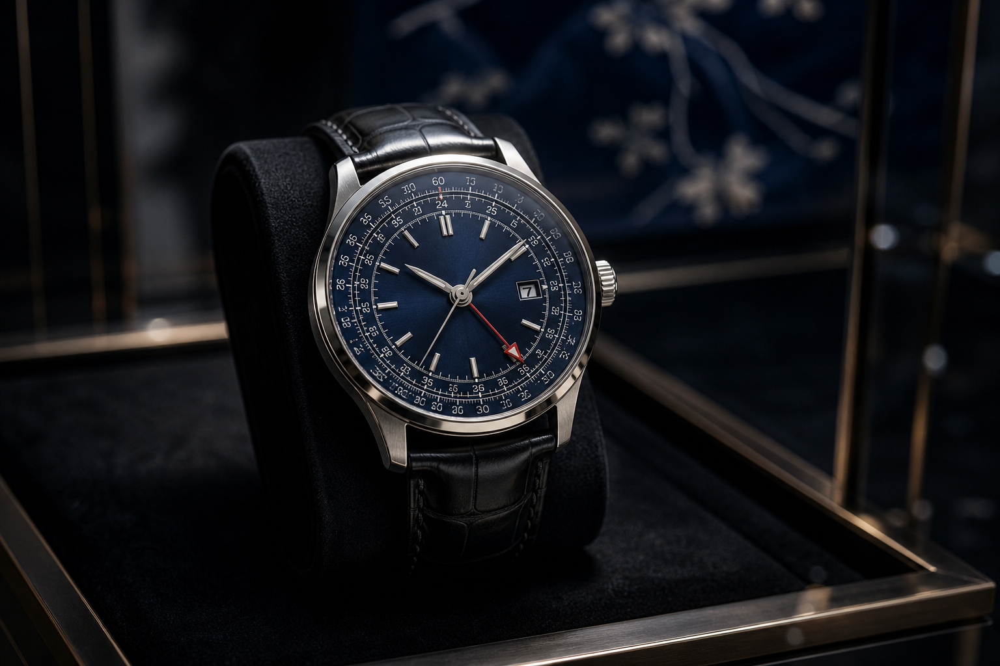

この藍色、かなり格好いい。
ナビタイマー GMT 41 侍ジャパン
こんにちは、ろぶーです。
今回は、ブライトリングで気になる時計を見つけました。「ナビタイマー オートマチック GMT 41 侍ジャパン リミテッド」です。

公式仕様を参考にした説明用AI生成画像です。公式写真や実物の複製ではなく、文字盤、目盛り、ケース、針、色、形状の完全一致は保証しません。ロゴ、侍ジャパンの商標、限定刻印は再現していません。
まず目に入るのが、この藍色です。
写真を見ていると、光の当たり方によって表情が変わりそうです。そして、紅色のGMT針が一本入っています。日本らしさを前に出しすぎていないのが良いですね。かなり格好いいです。
価格は90万円台です
価格は黒いアリゲーターレザー仕様が924,000円、7連ステンレスブレスレット仕様が968,000円です。
正直、気軽に買える価格ではありません。
ただ、侍ジャパンが好きで、記念品ではなく普段も使える機械式時計を探している方には、かなり気になる一本ではないでしょうか。
藍色と紅色で、日本をさりげなく表現
この時計、侍ジャパンとのコラボモデルですが、表から見ると派手な記念品には見えません。
文字盤には日本代表の伝統カラーである藍色。GMT針には、日の丸を思わせる紅色が使われています。
裏蓋には「SAMURAI JAPAN」のエンブレムと「ONE OF 100」の刻印が入り、特製ボックスにも侍ジャパンのロゴが使われます。
表は落ち着いていて、裏側と箱に限定モデルらしさがあります。全部を派手にしなかった。このバランスは、ろぶーは好きです。
海外へ行く人にも使いやすいGMT機能
紅色のGMT針は飾りではありません。24時間表示と組み合わせて、日本と海外など2つの時間帯を確認できます。
海外へ行った時、日本はいま何時かな？と見ることができます。海外出張や旅行、海外で野球を観戦する時にも便利ですね。
ナビタイマーらしい回転計算尺も残されています。クロノグラフの小さな文字盤が並ぶモデルではないので、見た目は比較的すっきりしています。
大きさは41mm
ケース径は41mm、厚さは11.65mmです。自動巻きのブライトリング32を搭載し、パワーリザーブは約42時間です。
防水は3気圧です。水に強いスポーツ時計というより、日常生活や旅行で使う機械式時計として考えた方がよいと思います。夏場に革ベルトを使う場合は、汗にも気を付けたいところです。
革ベルトとブレスレット、どちらを選ぶか
落ち着いた雰囲気で使うなら革ベルト。夏場や普段使いのしやすさを考えるなら、ブレスレットも魅力があります。価格差は44,000円です。
公式ページでは日本限定100本と案内されていますが、100本が2仕様の合計なのか、仕様ごとなのかはページ上で明確に確認できませんでした。購入時に店舗で確認した方が安心です。
購入前に確認したいこと
限定モデルだからといって、将来必ず値上がりするわけではありません。この色と侍ジャパンの組み合わせが本当に好きかどうかで選びたい時計です。
中古品では時計本体だけでなく、特製ボックス、保証カード、説明書、ブレスレットの余りコマ、整備履歴も確認してください。在庫や納期は販売店ごとに異なるため、購入直前の確認が必要です。
まとめ
このナビタイマーは、侍ジャパンのロゴを前面に押し出した記念時計ではありません。
藍色の文字盤と紅色のGMT針で、日本らしさをさりげなく表現した大人向けの限定モデルです。
個人的には、ガラスケース越しではなく、実物の藍色が光の当たり方でどう変わるのかを見てみたい時計です。
公式出典
侍ジャパン リミテッド特設ページ
レザー仕様 A323103A1C1P1
ブレスレット仕様 A323103A1C1A1
価格と販売表示は2026年8月14日に公式ページで再確認しました。今後変更される場合があります。